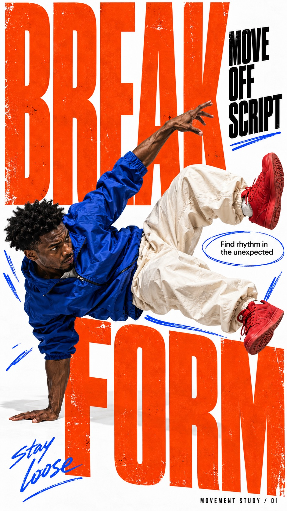
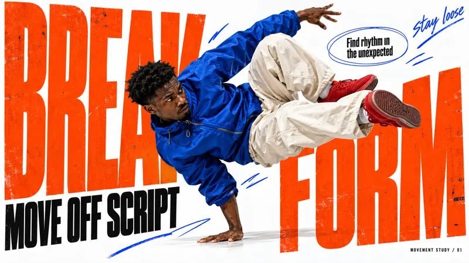
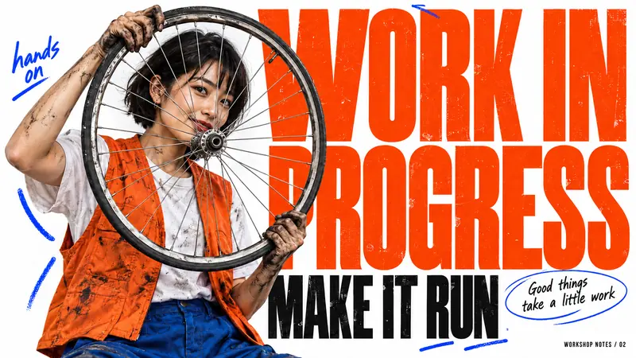
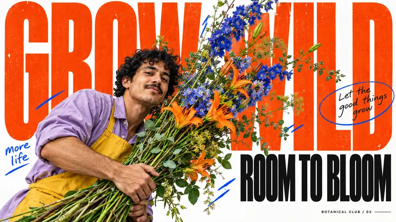
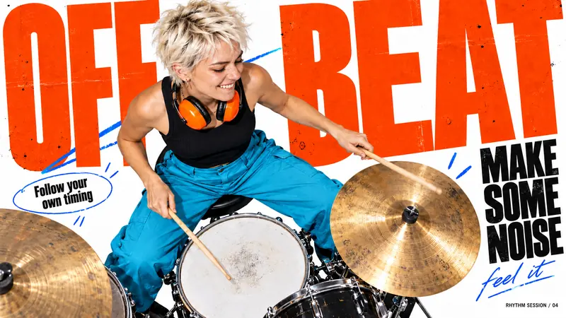

Type Posters · AI image style prompt
Orange Type Street Editorial
Street-magazine collage on white paper: giant vermilion ultra-condensed type, photoreal figure cutouts, black headline islands, oval callouts and blue marker gestures driven by each action.

4 example cases
Same style.json, different subjects. Each case's values are in the examples section of the JSON.




What this style does
White-paper street-magazine collage: giant vermilion-orange ultra-condensed type, high-saturation photoreal figures, black headline islands, thin oval callouts and electric-blue hand-drawn marks. The action and the shape of the props drive each case's layout.
Signature traits
- Bright white editorial paper space collides with enormous vermilion-orange ultra-condensed heavy typography, with smaller dense black headline islands.
- One vivid photoreal human cutout overlaps the type at dramatic scale; believable skin, fabric and equipment remain photographic against flat print graphics.
- Extreme typographic scale contrast: huge partly occluded display words, compact black subheads, small readable editorial notes and occasional loose handwritten accents.
- Thin imperfect oval callouts and sparse electric-blue marker gestures create an informal street-zine graphic grammar.
- Let the subject activity drive letter placement, negative space and overlap; typography may lean, stack, spread or form an aperture without losing recognizable glyphs.
- Adapt visual flow independently for portrait and landscape while preserving each case concept and exact copy.
style.json
{
"schema_version": "2.2",
"style_version": "1.0.0",
"style_name": "Orange Type Street Editorial",
"style_slug": "orange-type-street-editorial",
"style_summary": "White-paper street-magazine collage: giant vermilion-orange ultra-condensed type, high-saturation photoreal figures, black headline islands, thin oval callouts and electric-blue hand-drawn marks. The action and the shape of the props drive each case's layout.",
"category": "Type Posters",
"environment_variables": {
"ASPECT_RATIO": "9:16 or 16:9",
"STYLE_FIDELITY_ANCHORS": "Prioritized CORE and FLEX visual anchors",
"SOURCE_CONTENT_TO_AVOID": "Source-specific content to replace",
"SUBJECT": "Concrete human appearance and wardrobe",
"ACTION": "Physical action and equipment interaction",
"DESIGN_DIRECTION": "Case concept and independent ratio composition",
"MAIN_TEXT": "Exact huge display headline",
"SECONDARY_TEXT": "Exact black subheadline",
"NOTE_TEXT": "Exact small editorial sentence",
"HAND_TEXT": "Exact brief handwritten phrase",
"FOOTER_TEXT": "Exact small footer"
},
"style_fidelity_anchors": [
"[CORE] Bright white editorial paper space collides with enormous vermilion-orange ultra-condensed heavy typography, with smaller dense black headline islands.",
"[CORE] One vivid photoreal human cutout overlaps the type at dramatic scale; believable skin, fabric and equipment remain photographic against flat print graphics.",
"[CORE] Extreme typographic scale contrast: huge partly occluded display words, compact black subheads, small readable editorial notes and occasional loose handwritten accents.",
"[CORE] Thin imperfect oval callouts and sparse electric-blue marker gestures create an informal street-zine graphic grammar.",
"[FLEX] Let the subject activity drive letter placement, negative space and overlap; typography may lean, stack, spread or form an aperture without losing recognizable glyphs.",
"[FLEX] Adapt visual flow independently for portrait and landscape while preserving each case concept and exact copy.",
"[FLEX] Choose lively fashion colors around orange, white and black; yellow and cyan may be photographic accents rather than compulsory props."
],
"source_content_to_avoid": [
"Pink-haired seated laughing skateboarder and her original identity",
"Yellow skateboard with black figurative drawings",
"Original multicolored windbreaker and turquoise seated-leg silhouette",
"AI MIRROR, Spit, fire and all source wording",
"Vans and any other existing brand marks or signatures"
],
"visual_deconstruction": {
"hierarchy": "Photographic action and giant orange type dominate; black title islands and short editorial notes create secondary reading paths.",
"source_observation": "The source uses an oversized seated cutout and a tall diagonal board over rotated orange type; these are source layout choices, not mandatory invariants.",
"graphic_grammar": "Loose oval outlines, a few blue ticks, distressed ink and extreme shifts in letter scale."
},
"composition": {
"portrait": "Use full-height typographic mass and deliberate white pockets; choose action-driven focal placement per case.",
"landscape": "Recompose across width; redistribute text and subject instead of cropping or adding blank sidebars.",
"layering": "Flat paper, large ink typography, photographic cutout, selective foreground markers. Keep essential copy readable."
},
"typography": {
"display": "Vermilion ultra-condensed grotesk in extremely heavy uppercase; oversized but main phrase remains decipherable.",
"secondary": "Dense black condensed uppercase, strongly subordinate to giant type.",
"notes": "Small legible black editorial serif or narrow sans with brief cursive accents; all wording is supplied by the case."
},
"color_palette": {
"paper": "#FFFEFB",
"display": "#FF512D",
"black": "#111111",
"marker": "#26AEEF",
"accents": "Case-specific real fabric, flower and equipment colors."
},
"image_treatment": "Crisp studio editorial photography with natural skin pores, fabric seams and plausible physical contact; clean cutout edges with subtle localized contact shadows. Subtle flecks and slight fold wear affect only large orange ink areas at small scale, approximately 2 percent coverage. Paper stays bright, photographic detail is not globally grunged.",
"design_rules": [
"Use each action or equipment shape to change typography interaction and page rhythm.",
"Render only the five supplied copy strings, each once, exactly; do not add pseudo-text or brand labels.",
"Keep face, hands and equipment plausible, with clear contact and occlusion.",
"Leave white pockets for editorial reading while maintaining bold poster density.",
"Texture belongs to selected printed ink areas rather than a uniform dirty overlay."
],
"do": [
"Preserve scale contrast and white-orange-black balance.",
"Use oval annotations and blue gestures sparingly with clear compositional roles.",
"Recompose companion ratios around the same case idea."
],
"avoid": [
"Copying the original skateboard scene or brands.",
"Repeating the same central seated composition across cases.",
"Replacing photographic people with illustrations or 3D mascots.",
"Gibberish captions, fake logos, illegible required copy and extraneous words."
],
"prompt_template": "Create a finished premium street-culture editorial poster as a single raster image, aspect ratio {ASPECT_RATIO}. The image itself fills the canvas, no mockup or outer frame. Visual priorities:\n{STYLE_FIDELITY_ANCHORS}\nSubject: {SUBJECT}. Action: {ACTION}\nDesign intention and ratio-specific flow: {DESIGN_DIRECTION}\nExact copy, each string once: huge vermilion-orange headline \"{MAIN_TEXT}\"; substantial black condensed secondary \"{SECONDARY_TEXT}\"; small readable editorial note \"{NOTE_TEXT}\" inside one thin hand-drawn oval; handwritten accent \"{HAND_TEXT}\"; small footer \"{FOOTER_TEXT}\". Preserve spelling and punctuation; no other copy. Make actual letterforms dense and expressive; keep main words decipherable even with partial subject overlap. Natural photographic skin and fabric, clean cutout edges, subtle contact shadows. Small sparse ink flecks and subtle fold wear only within large orange printed letters, about 2 percent coverage; white paper stays clean. A few electric-blue marker strokes punctuate movement. Do not use generic centered template composition. Replace this source content completely: {SOURCE_CONTENT_TO_AVOID}. No logos, watermarks, unreadable pseudo-text, extra limbs, fused fingers, fake cutout outlines, gradients behind the subject or realistic room backdrop.",
"negative_prompt": "Source skateboard, source slogans, copied clothing identity, commercial logos, signatures, fake editorial text, extra words, malformed hands, impossible equipment, generic centered portrait template, flat illustration, CGI skin, uniform distress overlay, mockup frame",
"examples": [
{
"case_name": "body-in-motion",
"values": {
"SUBJECT": "An adult Black male breakdancer with short natural hair, intensely focused, wearing a cobalt nylon jacket, cream baggy trousers and unbranded red trainers",
"ACTION": "A believable low side freeze: one palm supports the torso, the other arm counterbalances, both bent legs carve an angular shape in the air. All limbs anatomically clear.",
"DESIGN_DIRECTION": "Make the dancer a living hinge between the two massive words. The body and letter blocks create a jagged zigzag and a clear white pocket for the caption. Portrait: a descending diagonal through the page, with limbs crossing letter edges. Landscape: a broad low angular silhouette bridging separated word masses, readable caption in the upper white pocket. Do not reproduce a seated figure pose.",
"MAIN_TEXT": "BREAK FORM",
"SECONDARY_TEXT": "MOVE OFF SCRIPT",
"NOTE_TEXT": "Find rhythm in the unexpected",
"HAND_TEXT": "stay loose",
"FOOTER_TEXT": "MOVEMENT STUDY / 01"
}
},
{
"case_name": "wheel-workshop",
"values": {
"SUBJECT": "An adult East Asian woman bicycle mechanic with a short dark bob, orange work vest over a white tee, blue work trousers and visibly grease-marked hands",
"ACTION": "Standing three-quarter portrait, holding a large real bicycle wheel vertically at chest level, one hand at the upper rim and one at the lower rim; she looks through the open spokes with a confident half-smile. Exclude the rest of the bicycle.",
"DESIGN_DIRECTION": "Use the wheel as a visual rhyme for the O in WORK, with the face seen through its spokes and a separate intact readable headline. Circular rim and oval notes create an eccentric orbit; the figure can crop at the thighs. Portrait: monumental vertically offset words around the round rim, small notes in lateral gutters. Landscape: wheel and face slightly left of center, giant letter field to the right, asymmetric open white corners. Keep spokes plausible and face clear.",
"MAIN_TEXT": "WORK IN PROGRESS",
"SECONDARY_TEXT": "MAKE IT RUN",
"NOTE_TEXT": "Good things take a little work",
"HAND_TEXT": "hands on",
"FOOTER_TEXT": "WORKSHOP NOTES / 02"
}
},
{
"case_name": "wild-flower-studio",
"values": {
"SUBJECT": "An adult tan-skinned male florist with curly dark hair and a small moustache, wearing a lavender overshirt and yellow canvas apron",
"ACTION": "Leaning forward from the lower side of the frame, carrying an exuberant long-stem arrangement of cobalt delphiniums, orange lilies and fresh greenery with both hands; flowers arc above his head. No vase.",
"DESIGN_DIRECTION": "Let the long natural stems become a diagonal divider that splits the large words and threads through their counters. The arrangement has real plant anatomy and clean individual blooms, not a vague bouquet. Portrait: upward sweep from low figure to tall airy flowers, white breathing pockets between stems. Landscape: broad botanical sweep from the cropped figure at one side across the central letter field, editorial note opposite. Create a distinctive asymmetric growth gesture.",
"MAIN_TEXT": "GROW WILD",
"SECONDARY_TEXT": "ROOM TO BLOOM",
"NOTE_TEXT": "Let the good things grow",
"HAND_TEXT": "more life",
"FOOTER_TEXT": "BOTANICAL CLUB / 03"
}
},
{
"case_name": "offbeat-drummer",
"values": {
"SUBJECT": "An adult woman drummer with short platinum hair, a black sleeveless top, bright cyan trousers and orange ear protection around her neck",
"ACTION": "Viewed from a high oblique overhead angle, seated at a compact photographic drum kit with two clearly visible wooden sticks, one poised above a snare and one reaching toward a cymbal. An energetic concentrated smile; plausible arms and hand grips.",
"DESIGN_DIRECTION": "Arrange cutout snare and brass cymbal circles as rhythmic punctuation interrupting an enormous typographic beat. White paper shows between the separate photographic drum forms; no stage or room background. Portrait: cascading circular kit forms beneath a smaller upper figure and large split headline. Landscape: wide off-center percussive arrangement with drummer toward one third and expanded typography across the rest. Keep the design editorial, not a conventional concert photograph.",
"MAIN_TEXT": "OFF BEAT",
"SECONDARY_TEXT": "MAKE SOME NOISE",
"NOTE_TEXT": "Follow your own timing",
"HAND_TEXT": "feel it",
"FOOTER_TEXT": "RHYTHM SESSION / 04"
}
}
]
}